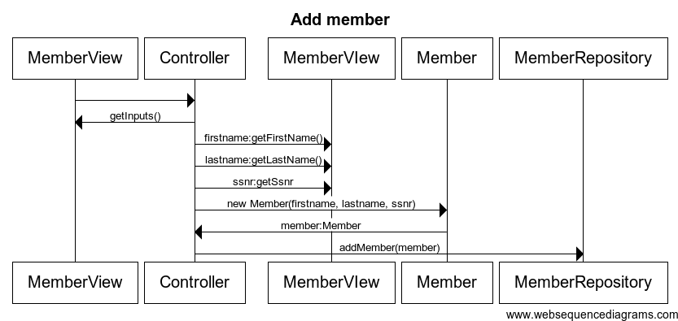
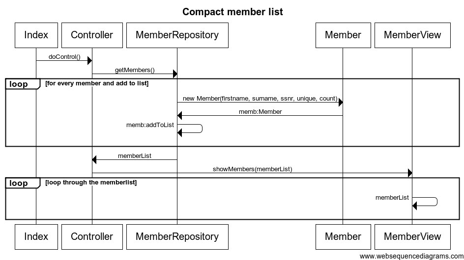
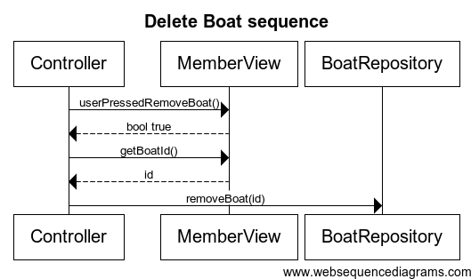

Add boat

Add member

Alter boat

Alter member
Show compact member list

Show full member list

Show member

Remove boat

Remove member

Peer Review Marco Hej vi har utfört peer review av din workshop 2, här kommer vår feedback: Vi ser att du sätter meddelanden i controllern och i modellen, dessa borde vara i vyn. Koden ser bra ut och det finns inga dupliceringar vad vi kan hitta och all kod används det vil säga det finns ingen död kod. Vi ser även att du inte har några relationer mellan klasserna i klassdiagrammet förutom arvet till repositoryklassen. Detta måste du fixa. I sekvensdiagrammen Add member och Edit member så har du en loop och den förtår vi inte varför du har. Ska du verkligen ha den? I sekvensdiagrammet Remove member så bör du väl ha en pil från Membercontroller till vyn som hämtar ID:t. Du bör också ha en pil från Membercontroller till MemberRepositoryt som skickar med Id från vyn. I sekvensdiagrammet View member så saknar du en pil från membercontroller till MemberView som hämtar ut ID. Du bör också ha en pil från memberController till MemberRepository som skickar ID. Du bör också ha en pil från memberController till BoatRepository som skickar ID. I sekvensdiagrammen Add boat och Edit boat så har du en loop och den förtår vi inte varför du har. Ska du verkligen ha den? I sekvensdiagrammet Remove boat så bör du väl ha en pil från Boatcontroller till vyn som hämtar ID:t. Du bör också ha en pil från Boatcontroller till BoatRepositoryt som skickar med Id från vyn. I sekvensdiagrammet Compact list så saknas en pil från MemberController till MemberRepository som hämtar alla Members, sedan får du väll tillbaka en lista som innehåller alla medlemmar och inte ID. Så den parametern med (ID) ska bort. Sedan ska du även skicka med listan när du kallar på vyn. Det saknas också en pil från MemberView till BoatRepository som hämtar antalet båtar som en Member har. I sekvensdiagrammet Verbose list saknar du en pil fårn MemberController till MemberRepository som hämtar alla medlemmar och sedan så ska inte MemberRepository retunera något ID utan en lista. Sedan borde du skicka med listan till MemberView. Sedan saknas en pil från MemberView till BoatRepository som hämtar alla båtar. Som en developer skulle jag inte förstå klassdiagrammet då det inte finns några relationer till de andra klasserna. Om du fixar klassdiagrammen framförallt så kommer du att klara betyg 3.
Hej Markus Vi har utfört peer reviewn för Workshop 2 I klassdiagrammet så använder du aggregations från main till boat och main till member och vi tycker att du borde ha en vanlig association här istället. Resten av klassdiagrammet ser bra ut. I sekvensdiagrammet Titta på en specifik medlems uppgifter så borde du ha två streck, det vill säga en pil från GetMemberInfo till Boat och sedan en pil från Boat till GetMemberInfo istället för 1 streck med dubbla pilar på. I sekvensdiagrammet Visa medlemmar (Full och kompakt) så saknas det lite pilar från Member till FullList borde det returneras något nu kallar du bara på Get full member info men inget kommer tillbaka till Fullist så egentligen finns det ingen lista för vyn att presentera. Det borde även vara en pil från Boat till FullList som returnerar alla båtar. Search for number of boats borde ha två streck istället för bara ett, ett som kallar på Search for number of boats och en som returnerar den listan. Från Member till Compact list ska det också vara en pil som returnerar member info, för som det är nu så kallas bara den funktionen men inget returneras. Annars ser det ok ut. Main metoden är väldigt stor vilket resulterar i att den blir svår att förstå men vi ser att du har en del model grejer i vyn till exempel save, add, remove och edit vilka borde ligga i modellen i stället. Annars är koden bra. Som en utvecklare så förstår man hur programmet ska fungera och se ut, så sekvensdiagrammen och klassdigrammet är bra gjorda. Det som är bra med desigenen och implementationen är att koden är välskriven och all kod används. Det som borde fixas föra att uppnå betyg 3 är att modell grejerna i main metoden som ä eran vy ska flyttas till modell klasser. Sedan bör också diagrammen fixas till lite med pilar och sådant.
Live testning När vi testar applikationen på angedd länk så tar det väldigt långt tid innan medlemmen man lagt till visas. När man först lägger till en medlem så syns den i listan, men när man uppdaterar igen så finns den inte kvar. Om man sedan vill lägga till en båt så syns den senaste tillagda medlemmen och båten man lagt till på en medlem men om man går tillbaka till fullständig lista och går tillbaka så är det som inget har hänt. Inte föränn efter ca 7-8 min så finns allt man lagt till med i listan igen. När man går till fullständing lista så upprepas en medlem beroende på antal båtar som medlemmen äger. Detta är lite förvirrande då det ser ut som att det finns många fler medlemmar än det egentligen gör. Tekniskt sett så är listan fullständing men egentligen skulle alla båtar synas på en medlem istället för att varje båt listas tillsammans med sin medlem. Kompilering och körning Det fanns inga körinstuktioner men vi hade inga problem med att köra applikationen. Dock så kunde vi inte kompilera och köra applikationen själva då det inte fanns några databas-backups eller sql tillgänglia för att rekonstruea databasen. Diagram Sekvensdiagrammen stämmer inte överens med implementationen på ett antal ställen. Memberview kallar inte på doControl i koden. Funktioner returnerar oftast inte något enligt diagrammen (ska de inte returnera något värde så ska man ändå returneras till där funktionen kördes). Det finns inget diagram på mainloopen som visar vilken klass som skapar vad vilket hade varit bra att ha. I vissa finns det pilar utan förklarande text så man vet inte vad som görs i koden. Det saknas några namespaces i klassdiagrammet som skulle göra det lättare att läsa (endast model på repository). Implementering Det finns två klasser som inte används (membermodel och memberlist) och borde i så fall tas bort då de inte tillför något i applikationen. Annars ser implementationen okej ut. Betyg 3 Vi tycker inte att designen har uppnåt betyg 3 i nuläget. Sekvensdiagrammen behöver ändras så de stämmer överens med implementationen. Ta en titt på de som Tobias gjorde för blackjack-spelet
1. Skapa en ny medlem med namn, personnummer och unikt medlemsnummer skall genereras.
2. Lista alla medlemmar på två sätt: ○ “kompakt lista”; med namn, medlemsnummer och antal båtar ○ “fullständig lista”; med namn, personnummer, medlemsnummer och båtar med båtinformation.
3. Ta bort en medlem Det tar en stund innan medlemmen försvinner: först finns den kvar i fullständiga listan, och om man klickar tillbaka från den fullständiga listan finns medlemen kvar i den kompakta listan, och man kan även gå in på medlemmen och se dess uppgifter. Sedan försvann medlemmen helt. (vi är lite förvirrade själva utav detta så det är svårt att formulera det tydligt).
4. Ändra en medlems uppgifter När man ändrar en medlem blir den uppdaterad i den kompakta listan, men inte i den fullständiga listan. När man sedan går tillbaka till den kompakta listan återfår medlemmen dens gamla värden igen.
5. Titta på en specifik medlems uppgifter Annie Sahlberg 141017 Maria Nygren Linnéuniversitetet
6. Registrera en ny båt på en medlem med båttyp (Segelbåt, Motorseglare, Motorbåt, Kajak/Kanot, Övrigt) och längd Den kompakta listan blir uppdaterad, men om man går till den fullständiga listan och tillbaka så kommer dom gamla värdena tillbaka. Det tar en stund innan det blir uppdaterat, man måste klicka fram o tillbaka och ibland funkar det och ibland inte.
7. Ta bort en båt Försvinner först i den kompakta men inte i den fullständiga. För att sedan komma tillbaka i den kompakta listan.
8. Ändra en båt Ingenting ändras.
9. Persistens (dvs registret skall sparas och laddas t.ex. från en textfil)
10. Strikt ModelVy separation (d.v.s. Modellen skall ej innehålla några som helst kopplingar till vyn, eller användargränssnittet, användargränssnittet skall ej utföra domänfunktioner)
11. God kodkvalité (t.ex. konsekvent kodstandard, ingen kodduplicering) Kodstandarden var bra, dock lite för lite kod för att kunna uppfylla kraven.
13. Enkel felhantering. Applikationen ska inte krascha vid felaktig inmatning men det behövs ingen användarvänlig felhantering. Applikationen krashar inte, men man kan fylla i vilka uppgifter som helst ex. bokstäver som personnummer.
Efter peer reviewsen har vi ändrat på allt som vi fick klagomål på angående den körbara applikationen så att den fungerar som den ska.